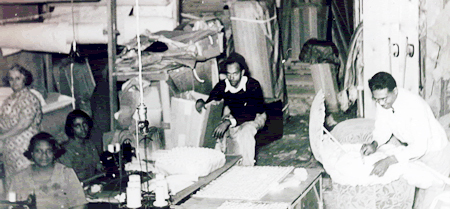

 Carper Casket Company is closing in on a century of service. The company was started by George A. Carper who was a grocery store owner and part-time chauffer at the time. George had a vision of starting a casket company to service local area funeral homes.
Once the casket company was up and running, it was known as the Funeral Directors Casket Company. The company struggled at their original manufacturing location in 1932, but later they moved to 3615 Easton where the caskets were built using nails and glue. Their main seamstress was Alice Tutt who was the mother of George's wife, Hallie.
In an effort to consolidate the showroom and manufacturing plant, the company's current site at 3204 Samuel Shepard drive was purchased from Anheuser Brewing Company. The company stopped manufacturing in 1948 and became a distributor. In turn, the company's name changed to Carper Casket Company. The product line was also enlarged to include caskets, burial garments and embalming fluid.
George A. Carper passed in 1964 and his son, George H. Carper II assumed control of the business. George II was a former Tuskeegee Airmen and he was inducted into the Minority Business Hall of Fame in 1989. Becoming semi-retired in 1989, the presidency was assumed by his son, George III. George II formally retired from the business in 2008. Carper Casket Company was selected as the Neighborhood Business of the Year by Mayor Francis Slay and the St. Louis Development Corporation in 2009. George Jr. passed December 15, 2009. Newest officers for Carper Casket Company include the wife of George II, Imelda Carper, President and Daughter, Carole Carper, first Vice President.
Since the beginning, hard work and ingenuity have been the hallmarks of the Carper legacy.